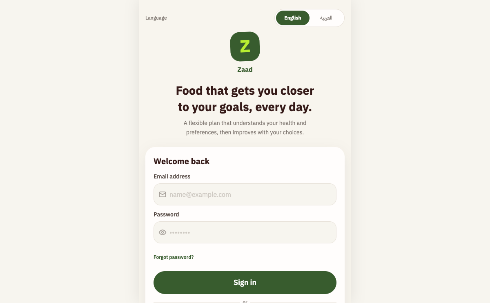

Deck

من المشكلة اليومية إلى شركة صحة رقمية قابلة للنمو
Zaad turns health data into daily nutrition decisions
Arabic users do not need another generic calorie counter. They need a practical bridge from lab results, chronic conditions, and local food habits to the next meal at home.
المشكلة ليست نقص النصيحة، بل صعوبة تحويلها إلى وجبة
The pitch should build belief before introducing the product: from confusion and friction to a calmer daily routine.
لحظة حيرة
مريض السكري أو الضغط يعرف أنه يجب أن يقلل السكر أو الملح، لكنه لا يعرف كيف يطبق ذلك على طبق حقيقي داخل البيت.
لحظة قرار
زاد يحوّل الحالة والتحليل والقياس إلى وجبة اليوم، مع بدائل محلية وملاحظات واضحة للعائلة أو من يطبخ.
السعودية وحدها تكفي لإثبات حاجة كبيرة ومتكررة
ملف صحي، وجبات، تحاليل، وصفات، وتتبع
زاد لا يعرض قائمة طعام جامدة. التطبيق يبني خطة بناءً على الحالة والهدف والقياسات، ثم يربطها بوصفات سعودية وخليجية قابلة للتطبيق.
زاد قوي لأنه ليس شاشة واحدة، بل حلقة استخدام متكررة
Loop
ابدأ حيث تكون الحاجة اليومية والثقة أعلى
أولوية أولى
- مصابو السكري وما قبل السكري.
- العائلة أو مقدم الرعاية الذي يطبخ أو يتابع.
- أصحاب الوزن الزائد مع هدف صحي واضح.
أولوية ثانية
- عيادات التغذية ومراكز السكري.
- أخصائيو التغذية الذين يحتاجون متابعة بين الجلسات.
- أصحاب العمل وشركات التأمين بعد إثبات KPIs.
قصة المستثمر تتحسن كلما صعدنا هذا السلم
The investor deck should not jump to valuation before proving usage, retention, economics, and trust.
إثبات ألم المنتج
استخدام أول خطة خلال أول جلسة
إثبات عادة أسبوعية
WAU/MAU ومعدل العودة للخطة
إثبات ثقة صحية
رفع تحاليل، قياسات، ومشاركة عائلية
إثبات اقتصاديات
تحويل مدفوع، CAC، LTV، وهامش
إثبات شراكات
عيادات ومختصون وبرامج تجريبية
الإيراد يتبع الثقة: اشتراك، استشارة، ثم شراكات
نموذج أولي قابل للتعديل عند ظهور أرقام تشغيل حقيقية
هذه أرقام افتراضية وليست نتائج فعلية. المطلوب في أول 90 يومًا هو قياس الاحتفاظ والثقة قبل تضخيم النمو.
زاد ليس عداد سعرات، وليس وصفات فقط
ما تملكه التطبيقات العامة
- قواعد بيانات سعرات كبيرة.
- تجارب تتبع معتادة.
- علامات تجارية عالمية.
مساحة زاد الدفاعية
- عربي أولًا وسياق عائلي.
- مطبخ سعودي وخليجي معدل علاجيًا.
- ربط التحاليل والقياسات بقرار الوجبة.
أول 90 يوم هدفها إثبات الحاجة، لا تضخيم القصة
لا نرفع جولة أكبر قبل ظهور هذه الإشارات
الطلب المقترح لجولة مبكرة
1.5M-3.0M
Use of proceeds: prove retention, paid conversion, report intelligence, family sharing, and first clinical partnerships.
الفكرة التي لا تُنسى: زاد يدخل المطبخ لا الهاتف فقط
Zaad is not another diet app. It turns health nutrition from generic advice into daily decisions people can actually follow.
يثق المستخدم لأن الخطة مرتبطة بملفه الصحي.
تساعد العائلة لأن الخطة قابلة للمشاركة والطبخ.
يثق المستثمر عندما تظهر عادة واحتفاظ وإيراد.
المصادر واضحة، والافتراضات مفصولة عن النتائج
مصادر السوق
- IDF: Saudi Arabia diabetes 2024.
- GASTAT: Health Determinants Statistics 2024.
- Grand View Research: Saudi digital health market.
افتراضات يجب استبدالها
- MAU وWAU وD30 retention.
- CAC وLTV والهامش.
- تحويل مدفوع وشراكات فعلية.